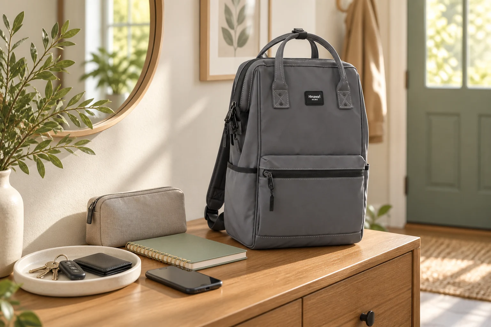

백팩을 바꿔 드는 날: 소지품을 빠뜨리지 않는 이동 순서

평일 백팩에서 주말 가방으로 바꿨는데 열쇠가 어제 가방에 남아 있던 경험이 있나요? 이때 필요한 것은 포켓을 더 늘리는 일이 아니라 물건이 이동하는 순서를 정하는 것입니다. 짐을 줄이는 정리와 달리, 오늘의 목적은 필요한 물건을 빠짐없이 옮기고 새 위치를 기억하는 데 있습니다.
1. 두 가방 사이에 임시 자리를 만드세요
깨끗한 테이블 한쪽을 비워 기존 가방에서 나온 물건을 먼저 놓습니다. 기존 가방에서 새 가방으로 바로 넣으면 어느 포켓을 확인했는지 헷갈리기 쉽습니다. 메인 칸, 안쪽 작은 칸, 바깥 포켓 순서처럼 자신만의 점검 방향을 정하고, 비운 칸은 지퍼를 열어둡니다.
2. 매번 함께 다니는 필수품을 이름으로 적으세요
지갑·열쇠·휴대전화처럼 자신의 외출에 빠질 수 없는 물건을 짧게 적습니다. 파우치 자체가 아니라 안에 반드시 있어야 하는 물건도 확인하세요. 예를 들어 전자기기 파우치를 옮겼어도 충전기는 콘센트에 꽂혀 있을 수 있습니다. 숫자를 세는 것보다 물건 이름을 하나씩 대조하는 편이 누락 지점을 찾기 쉽습니다.
3. 충전 중이거나 다른 곳에 둔 물건을 따로 표시하세요
휴대전화, 충전 중인 기기, 현관에 둔 출입카드는 테이블에 아직 없을 수 있습니다. 목록에서 그 항목을 남겨두고 출발할 때 채웁니다. ‘나중에 챙길 것’을 이미 넣은 것으로 간주하지 않는 것이 핵심입니다. 전날 준비한다면 메모를 새 가방 위에 두어 마지막 확인이 끝나기 전까지 눈에 띄게 하세요.
4. 같은 포켓 대신 같은 역할을 정하세요
새 가방에는 어제와 같은 위치의 포켓이 없을 수 있습니다. 열쇠는 잠글 수 있는 작은 칸, 함께 쓰는 소품은 하나의 파우치처럼 역할을 먼저 정하세요. 실제 입구와 깊이가 맞는지 확인하고 억지로 넣지 않습니다. 자주 꺼낼 물건 두세 개는 새 위치를 손으로 짚어보면 이동 중에 모든 칸을 여는 일을 줄일 수 있습니다.
5. 이전 가방의 빈칸과 새 가방의 목록을 대조하세요
모든 포켓의 모서리를 손과 눈으로 확인해 이전 가방이 비었는지 살핍니다. 남겨둘 물건이 있다면 무엇인지 메모해 다음 교체 때도 알 수 있게 합니다. 새 가방에서는 필수품 목록과 아직 밖에 있는 물건을 마지막으로 대조하세요. 지퍼를 닫기 전 한 번의 대조가 출발 후 되돌아오는 수고를 줄여줍니다.
참고·안내
- Himawari 실제 제품 정보
- 사용 환경과 제품 구조에 따라 적용 방법이 다릅니다. 제품 안내와 장소별 이용 수칙을 우선하세요.
- 대표 이미지는 Himawari No.1884 제품 이미지를 참조한 AI 연출 이미지이며, 실제 손상이나 수선 결과를 보여주는 사진이 아닙니다.
자주 묻는 질문
가방마다 같은 물건을 하나씩 넣어두면 더 편하지 않나요?
저렴한 소모품은 그렇게 관리할 수 있지만, 열쇠·신분증·기기처럼 하나뿐인 물건의 이동 확인을 대신하지는 못합니다. 중복으로 넣은 물건도 남은 양과 상태를 점검하세요.
옮길 때마다 수납 위치가 달라져요.
위치를 완전히 같게 맞추기보다 필수품, 전자 소품, 생활 소품처럼 역할을 유지해 보세요. 새 가방에서 그 역할을 맡는 칸을 확인하는 방식입니다.